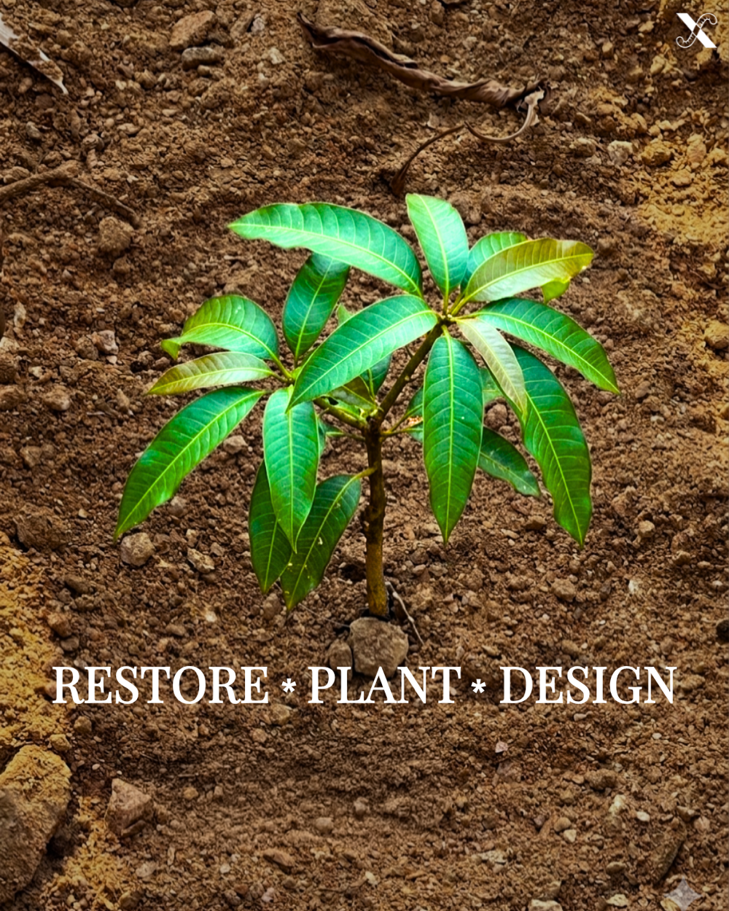
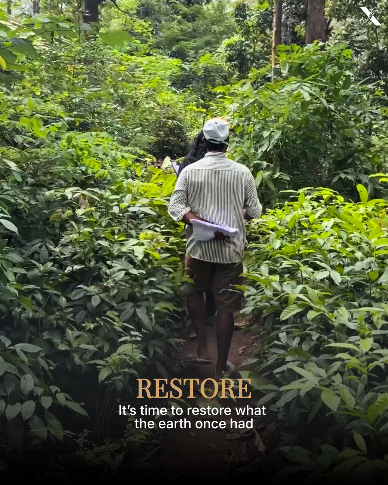
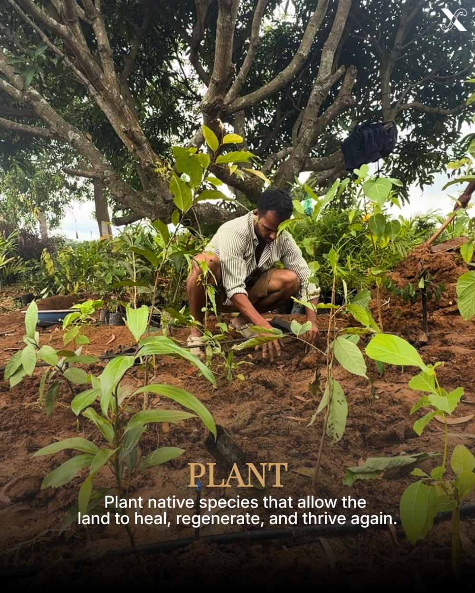
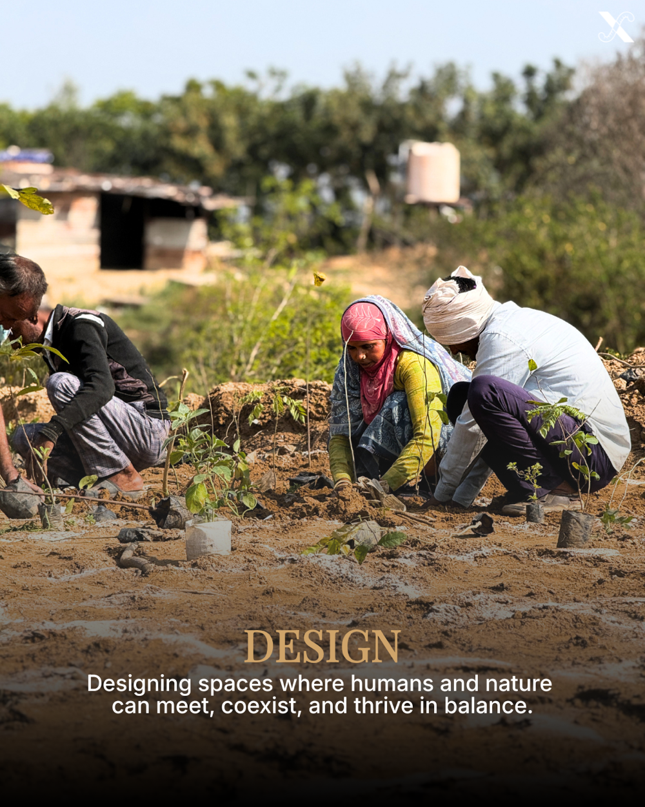

Restoring Earth.
Root by Root.
EarthwormX transforms barren lands into thriving ecosystems. We specialize in Miyawaki and food forests, soil regeneration, and sustainable farm landscapes—reviving degraded land while building climate resilience.
10,000+
Native Trees
20+
Miyawaki Forests
Tons
CO₂ Offset




Our Services
From Miyawaki forests to sustainable farm design—regenerating land, restoring ecosystems.
Miyawaki Forest Creation
Dense, fast-growing native forests in 1/10th the time.
Food Forest Development
Layered edible ecosystems that restore fertility and capture carbon.
Soil Regeneration
Vermicomposting, biochar, and microbial restoration.
Farm Master Planning
Sustainable layouts with rainwater harvesting and agroforestry.
Smart Irrigation Systems
Precision drip, mist, and fog setups with 90% water efficiency.
Bamboo Plantations
Carbon storage, erosion control, and sustainable livelihoods.
Plant Supply Solutions
Sourcing premium native saplings, organic seeds, and diverse flora for ecological projects.
Our Process
From assessment to self-sustaining forest
Assess
Soil, terrain & ecology analysis
Design
Custom native forest layouts
Regenerate
Restore soil vitality
Plant
Multi-layer native species
Thrive
Self-sustaining growth
Projects
From barren to bountiful — drag the slider to see the transformation
Before/After Transformations
Miyawaki Forest Transformation - Site 1
Barren, degraded soil revived into a dense, self-sustaining Miyawaki native forest ecosystem.
Miyawaki Forest Transformation - Site 2
Accelerated growth of native trees forming a tight canopy layer to restore local climate resilience.
Miyawaki Forest Transformation - Site 3
High-density planting showing natural layers of native canopy, sub-canopy, and shrub layers thriving.
Miyawaki Forest Transformation - Site 4
Barren land completely transformed into a self-maintaining native micro-forest in record time.
Miyawaki Forest Transformation - Site 5
Degraded plot restored with a rich species mix, establishing a productive microclimate.
Miyawaki Forest Transformation - Site 6
Barren field transformed into a mature, dense green forest canopy capturing carbon.
Miyawaki Forest Transformation - Site 7
Restoring native ecosystem balance and soil biodiversity on degraded hillsides.
Miyawaki Forest Transformation - Site 8
Rapid growth of native flora establishing a sustainable, lush micro-ecosystem.
Miyawaki Forest Transformation - Site 9
Converting dry, barren soil into a lush green native canopy that restores ecological balance.
Featured: Miyawaki Forest Growth Stages
Capturing Regeneration
Raw, unfiltered moments from our project sites across India — showing the real work of restoring lands.


.jpg)
Frequently Asked Questions
Answers to common questions about our process and services.
What areas do you serve?+
Do you use native plants?+
How long does a project take?+
Do you provide maintenance?+
Contact Us
Ready to restore your land? Let's create a thriving ecosystem together.
Start Your Project Directly on WhatsApp
Connect directly with our founder Azhar K A to discuss soil regeneration, Miyawaki forest designs, water harvesting, or custom agroforestry solutions.